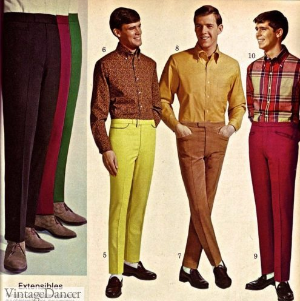
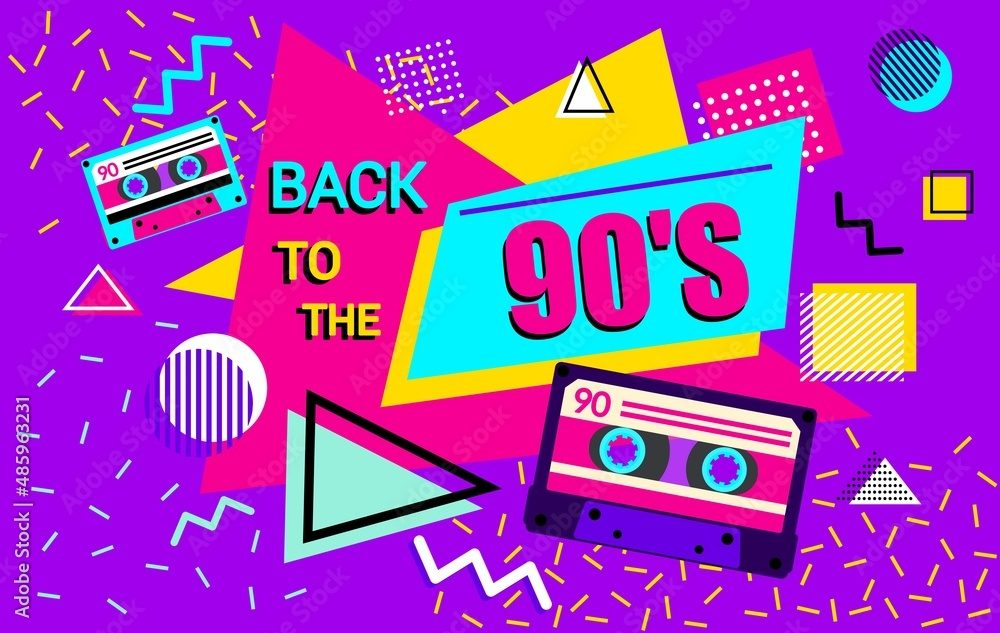

Fashion Through Time
Fashion is more than clothing: it's a reflection of society, culture, and individual expression. Each decade brings unique trends, revolutionary styles, and iconic looks that define an era.
From the free-spirited bohemian styles of the 1970s to the grunge and minimalism of the 1990s, this site traces how clothing evolved alongside social movements, technology, and pop culture.
Explore by Decade
Pick a decade to discover its defining styles, iconic fashion moments, and cultural influences.

1960sMod & Hippie
Shift dresses, miniskirts and go-go boots gave way to tie-dye and bohemian freedom.
Explore the 1960s → 1970s
1970s
The Bohemian Era
Bell-bottoms, platform shoes, and disco influences defined this vibrant decade of self-expression.
Explore the 1970s →The Power Decade
Shoulder pads, neon colors, and power suits characterized this bold era of excess and ambition.
Explore the 1980s →
1990sGrunge & Minimalism
Flannel shirts, slip dresses, and an attitude of rebellion and stripped-down simplicity.
Explore the 1990s → 2000s
2000s
Y2K & the Digital Age
Low-rise jeans, velour tracksuits, and the fusion of technology with fashion aesthetics.
Explore the 2000s →About the Project
Trends over Decades documents the history of fashion one decade at a time. Each member of Fashion Team 5 researched and built one era's page.
Understanding fashion history helps us appreciate today's trends, and spot the ones that keep coming back.